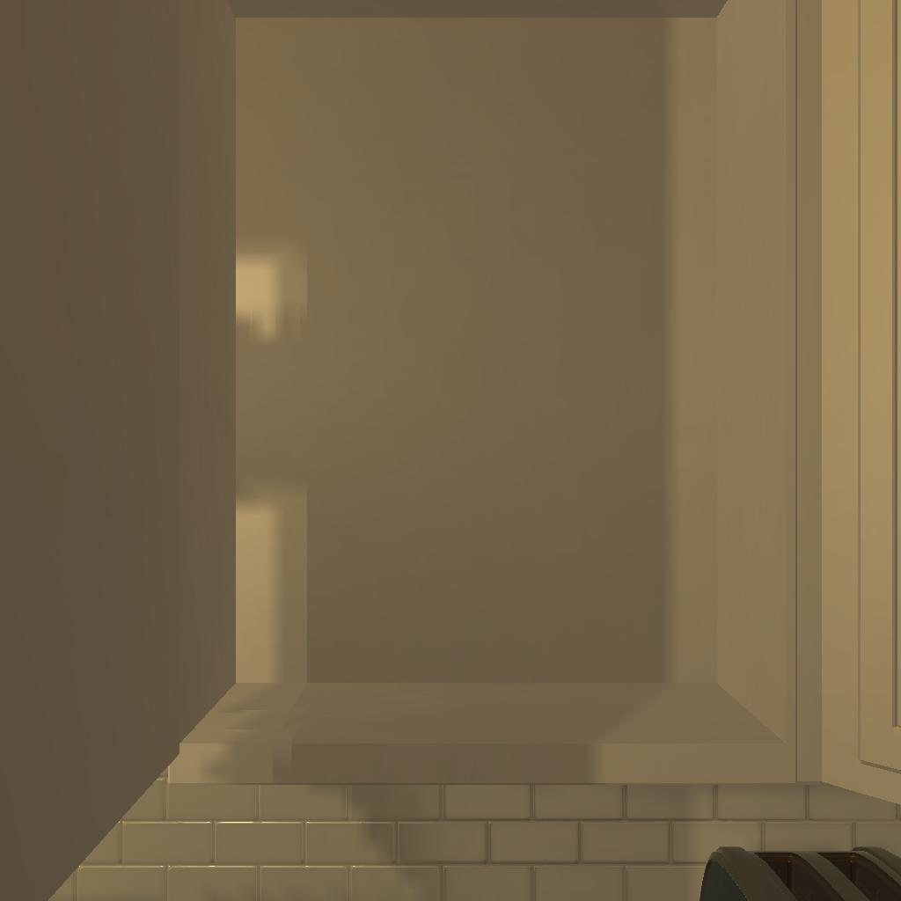

---------------------------------------------------------task: 10---------------------------------------------------------
--------------------------------------------------------------------------------------------------------------------------------------------------------------------
--------------------------------------------------------------------------------------------------------------------------------------------------------------------
Step:--------------------------------------------------------------------------17-------------------------------------------------------------------------------
----------------------------------------
VLM Prompt:
Image1:
**Instruction**
1. Analyze the provided image to identify all visible household objects, focusing on those relevant to the task description "clean some plate and put it in countertop."
2. Use the analysis of the image and the task hint "The agent must find an object of the desired type, pick it up, go to a sink or a basin, clean the object with a sink or basin, and then find the correct location to place it and put it down there. The agent does not need to use soap bottle or faucet to clean the object, and the agent just needs to do action that is "clean the object with the sink or sink basin"." to answer the question: what is the most reasonable action in the choices for the task description "clean some plate and put it in countertop"?
4. Decide and write the answer using the template: The answer is: (i): , where i is the real number. If there is no desired object in the image, search every place based on **Initial Observation** to find the object. And if no one is exactly correct, choose a similar answer.
**Initial Observation**
You are in the middle of a room. Looking quickly around you, you can see cabinet (1-20), toaster (1), microwave (1), garbagecan (1), countertop (1-2), drawer (1-4), stoveburner (1-4), sinkbasin (1), sink (1), fridge (1), diningtable (1), coffeemachine (1)
**Answer Choices**
(1): go to cabinet 2
(2): go to toaster 1
(3): go to cabinet 4
(4): go to cabinet 5
(5): go to microwave 1
(6): go to garbagecan 1
(7): go to countertop 1
(8): go to drawer 1
(9): go to cabinet 6
(10): go to cabinet 7
(11): go to drawer 2
(12): go to stoveburner 1
(13): go to stoveburner 2
(14): go to countertop 2
(15): go to cabinet 8
(16): go to cabinet 9
(17): go to cabinet 10
(18): go to drawer 3
(19): go to drawer 4
(20): go to stoveburner 3
(21): go to stoveburner 4
(22): go to cabinet 11
(23): go to cabinet 12
(24): go to cabinet 13
(25): go to cabinet 14
(26): go to sinkbasin 1
(27): go to sink 1
(28): go to cabinet 15
(29): go to fridge 1
(30): go to cabinet 16
(31): go to cabinet 17
(32): go to cabinet 18
(33): go to cabinet 19
(34): go to diningtable 1
(35): go to coffeemachine 1
(36): go to cabinet 20
(37): open cabinet 3
(38): close cabinet 3
(39): take nothing from cabinet 3
(40): examine cabinet 3
**Answer**
Let's think step by step by following the instructions.
----------------------------------------
----------------------------------------
Original Response:
First, looking at the image provided, we can see a countertop and some cabinets. Since the task is to clean a plate and put it on the countertop, we need to find a plate, which is likely to be in a cabinet.
From the **Initial Observation**, we know there is a sink and a sink basin in the room. After finding a plate, the agent would need to go to the sink or sink basin to clean it.
Based on the **Answer Choices**, the most reasonable actions to find a plate would be to go to a cabinet or a drawer, as plates are usually stored in these locations. Since the image shows a cabinet, we should focus on the cabinet-related options. However, there are no actions that directly mention taking a plate from a cabinet.
The closest actions related to the cabinet are:
- (1): go to cabinet 2
- (3): go to cabinet 4
- (4): go to cabinet 5
- ...
- (36): go to cabinet 20
- (37): open cabinet 3
- (38): close cabinet 3
- (39): take nothing from cabinet 3
- (40): examine cabinet 3
Since the agent needs to find a plate, the action of examining a cabinet seems the most relevant, as it would allow the agent to look inside and find the desired object (plate).
The answer is: (40): examine cabinet 3.
If the agent finds a plate in cabinet 3, the next steps would be to go to the sink or sink basin to clean it and then place it on the countertop.
----------------------------------------
----------------------------------------
>>> Refine Original VLM Response and Get Pure Action: examine cabinet 3
----------------------------------------
-----------------------------------------------------------------
Running time: 22.956064701080322 seconds
Total Money: 3.0271000000000003
-----------------------------------------------------------------
-----------------------------------------------------------------
Text Observation:On the cabinet 3, you see nothing.
-----------------------------------------------------------------
UNSUCCEED